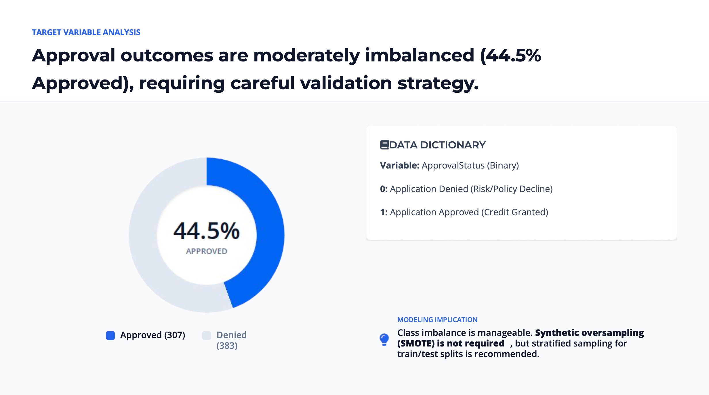
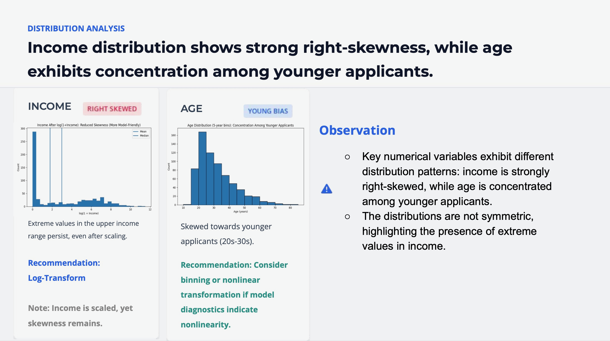
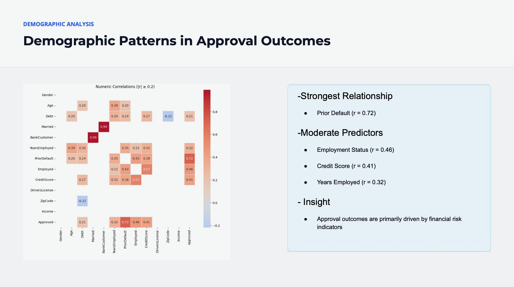
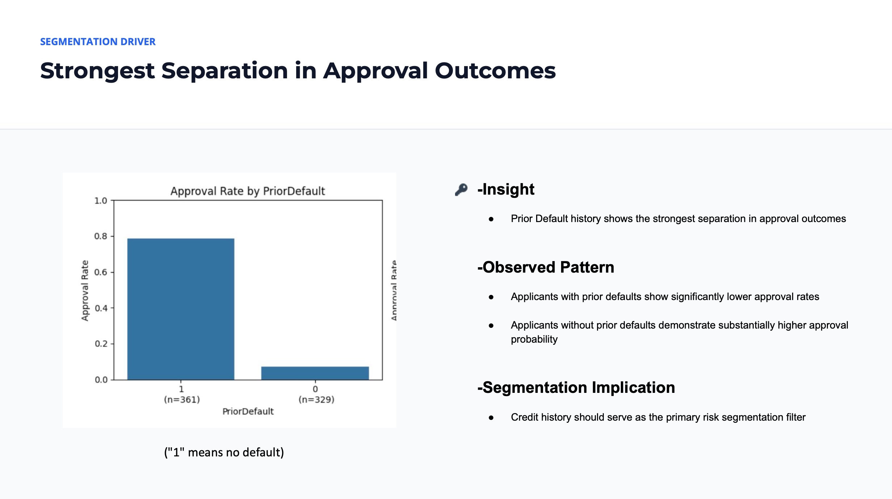

Machine Learning Case Study
Built a predictive analytics workflow to understand what drives credit card approval decisions, evaluate applicant risk patterns, and compare the tradeoff between model interpretability and predictive power.
Business Problem
Financial institutions must balance growth and risk when reviewing credit card applications. Approving high-risk applicants can increase default exposure, while rejecting qualified applicants can limit customer acquisition and revenue opportunities.
This project analyzed applicant demographic, employment, financial, and credit-history variables to identify which factors were most strongly associated with approval outcomes. The goal was to support a more data-driven approval strategy by combining exploratory analysis, segmentation, and classification modeling.
Data Analysis
Applicant records analyzed across 16 variables after cleaning and preprocessing.
Approval rate in the target variable, creating a manageable class imbalance for classification modeling.
Denial rate, meaning accuracy alone could be misleading without careful model evaluation.
Applicant features reviewed across demographic, financial, employment, and credit-history categories.
Insights
Prior default history showed the strongest relationship with approval outcomes, making it the clearest risk segmentation variable in the analysis.
Employment status and years employed showed meaningful relationships with approval probability, suggesting that financial stability played an important role in approval decisions.
Income showed strong right-skewness, meaning transformation or nonlinear modeling approaches were needed before relying on it as a clean predictor.
Demographic variables showed some predictive signal, but financial and credit-history variables provided stronger and more interpretable business value.
Slide Deck Examples




Modeling
Reviewed skewed variables, zero-heavy credit score patterns, and redundant predictors before modeling to reduce noise and improve interpretability.
Evaluated approval prediction as a classification problem, where the model needed to distinguish approved and denied applicants while accounting for class distribution.
Compared modeling approaches with the goal of balancing predictive performance against the ability to explain approval drivers to business stakeholders.
Used credit history, employment stability, and financial risk indicators to identify applicant groups with different approval likelihoods.
Business Value
The analysis helped identify which applicant characteristics were most useful for separating lower-risk and higher-risk approval profiles.
Data quality checks and feature analysis helped determine which variables required transformation, removal, or deeper review before modeling.
Prior default history, employment stability, and credit score patterns provided practical segmentation logic for applicant evaluation.
The project emphasized not just model accuracy, but whether results could be interpreted and used in real approval strategy discussions.
Tools Used